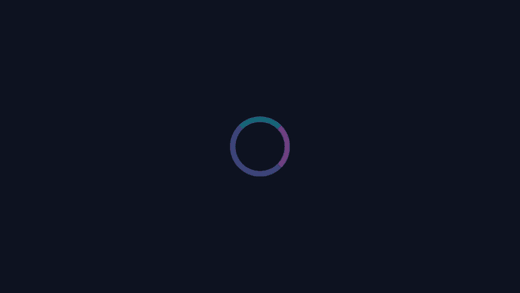
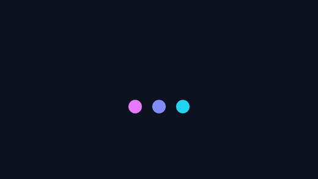
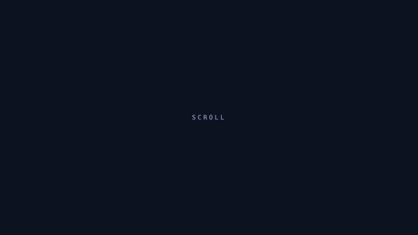

ground truth
Four ordinary UI animations, written with constants we chose. Each was rendered to a video — a screen recording in every sense — and fed back through the pipeline. This page publishes the error.
report.md, linked per section. Where motiscope is wrong, the
number is in the table and the reason is in the prose.
four animations, one honest column
| Demo | Authored | Measured | Verdict |
|---|---|---|---|
| Hero entrance | 700ms, cubic-bezier(.16,1,.3,1) |
520ms, ease-out |
class right, duration 26% short |
| Staggered grid | 120ms between cards | 117ms | within 2.5% |
| Loader loop | 1200ms period | 1200ms, conf 0.83 | exact — given enough cycles |
| Scroll reveal | 420px of scroll, no duration | 1120ms ease-out |
the seconds are the recorder’s |
A tool that only publishes its wins is a brochure. Two of these four are partly wrong, and both failures are the ones the docs already warned about.
fade + rise + scale on load · the classic
| Authored | Measured | |
|---|---|---|
| Duration | 700 ms | 520 ms |
| Easing class | ease-out | ease-out |
| Control points | (.16, 1, .3, 1) | (0, 0, .58, 1) |
| Structure | move, then hold | move, hold, 40ms move, hold |
six cards, each 500ms, 120ms apart
| Authored | Measured | |
|---|---|---|
| Stagger interval | 120 ms | 117 ms (−2.5%) |
| Direction | left→right, then wrap | top-to-bottom (conf 0.73) |
| Span | 600 ms of offsets | 584 ms |
117 against an authored 120. The stagger interval is the number people most want and least expect to get, and it comes back within a frame at 25fps.
The direction is reported as top-to-bottom rather than left-to-right — and it isn’t wrong. The grid is 3×2, so the later cards really are both further right and further down. The energy centroid travels diagonally; motiscope names the dominant axis. Read the frames to break the tie — that’s the division of labour the whole tool is built on.
a ring that breathes, 1200ms per cycle

| Authored | Measured | |
|---|---|---|
| Period | 1200 ms | 1200 ms |
| Confidence | — | 0.83 (threshold 0.70) |
| With only 3 cycles | 1200 ms | rejected — conf 0.66 |
0.66, under the
0.70 guard — so motiscope says nothing rather than guessing. Give it six cycles
and it returns 1200 ms at 0.83. The guard is doing its job in both
cases; a rejected loop is not a missing loop, it is an unproven one.

Our first loader was three bouncing dots, offset by 140ms each. motiscope reported
no loop, correlation 0.18.
It is right, and the reason is lovely: a good loader is designed so that something is always moving. The dots’ aggregate motion is nearly constant, and aggregate motion is precisely the signal loop detection reads. The better the loader looks, the flatter its energy curve.
The docs already say a constant-velocity spinner is undetectable for the same reason. This is the same fact wearing a different hat.
opacity and offset are functions of scroll, not of time

| Authored | Measured | |
|---|---|---|
| Trigger | scroll position | — |
| Reveal distance | 420 px of scroll | not a thing motiscope reports |
| Duration | there isn’t one | 1120 ms |
| Easing | there isn’t one | ease-out |
Both measured numbers are correct descriptions of the recording, and both are useless as descriptions of the design.
There is no duration in the source — the CSS reads
opacity: clamp(0, calc(var(--s) / 420), 1). The 1120 ms is how long
we took to scroll. The ease-out is an artefact of the reveal finishing at
420px while the scroll kept going. Replay those seconds and you reproduce the recording, not
the website.
This is why the spec has a scroll_driven flag, and why recreate
binds motion to scroll position instead of a timer. What is intrinsic to a
scroll-driven scene is a ratio — see the
parallax example, where six layer ratios are recovered and one is
honestly reported as unrecoverable.
dogfooding earns its keep
The loader demo is dark-themed, like this site. blackdetect fires on any frame
that is ≥98% dark pixels, so it flagged the entire clip as black — and motiscope
duly reported one long fade-in spanning 0–2360 ms, losing every bit of the
real motion.
before: fade-in 0..2360ms # the whole clip, one "transition"
after: move 0..1080ms hold # the breathing ring, as authored
move 1320..2280ms hold
move 2520..3560msA clip that is dark from beginning to end is not a fade — darkness that never resolves is
the design. A black interval covering ≥ DARK_CLIP_FRACTION (0.85) of the clip
is now ignored, with regression tests both ways: a real 0.4s fade in a 2.4s clip is still
detected, and the same 0.5s of black is a fade in a 5s clip but the whole story in a 0.55s one.
Every dark-mode UI animation was affected. It took authoring an animation we already knew the answer to before anyone noticed.
the demos are the source of truth — read the constants in the CSS
motiscope analyze hero.mp4 --preset balanced # -> report.md + curated framesEach demo freezes on an exact time via #t=<ms> (or #s=<px> for the
scroll one), which is how the recordings were rendered frame by frame. The authored constants
sit in a comment directly above the keyframes.